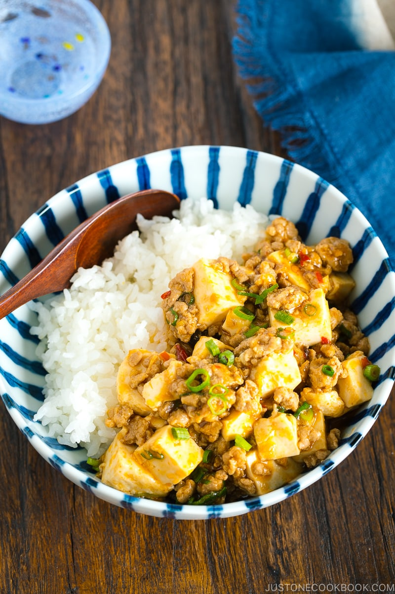

Mabo Tofu Recipe

Description
Mapo Tofu is easily one of our family's favorite meals!
It is so simple to make yet incredibly soul-satisfying.
I love making the dish on a hectic weeknight when 30
minutes is all that I could spare to cook dinner for the family.
We often eat mapo tofu donburi-style, with the tofu-and-sauce
mixture over fluffy steamed rice. Yes, who doesn't like a one-bowl
meal for easy cleanup! I think you and your family
are going to enjoy it.
Ingredients
- 2 cloves garlic
- 1 knob ginger
- 2 green onions
- 14 oz soft tofu
- 1 Tbsp olive oil
- 1/2 lb ground pork
- you can also use other meat and veggies of your choice
For the seasoning
- 2 1/2 Tbsp doubanjiang
- 2 Tbsp mirin
- 1 Tbsp miso
- 1 Tbsp oyster sauce
- 1/2 Tbsp soy sauce
- 1 tsp roasted sesame oil
- 1 tsp potato starch or cornstarch
- 4 Tbsp water
Cooking Instructions
- Gather all the ingredients.
- Combine all the ingredients for
the seasonings (the doubanjiang, mirin, miso,
oyster sauce, soy sauce, sesame oil, cornstarch,
and water) in a bowl and mix well together.
- Mince the garlic cloves and ginger finely.
- Cut the green onions into small pieces. Drain
the tofu and cut into 1-inch (2.5 cm) cubes.
- In a large frying pan, heat the vegetable oil on
medium heat and sauté the garlic and ginger.
Make sure you don't burn them. Once they are fragrant,
add the ground pork and break it up with a
spatula or wooden spoon.
- When the meat is no longer pink, add the seasonings
mixture and stir thoroughly. Bring the sauce to a boil
- Once the sauce is boiling, add the tofu and gently coat
it with the sauce. Stir frequently, without mashing the
tofu, until it is heated through. Add the green onions
and stir to incorporate just before taking the pan off the heat.
Serve immediately.